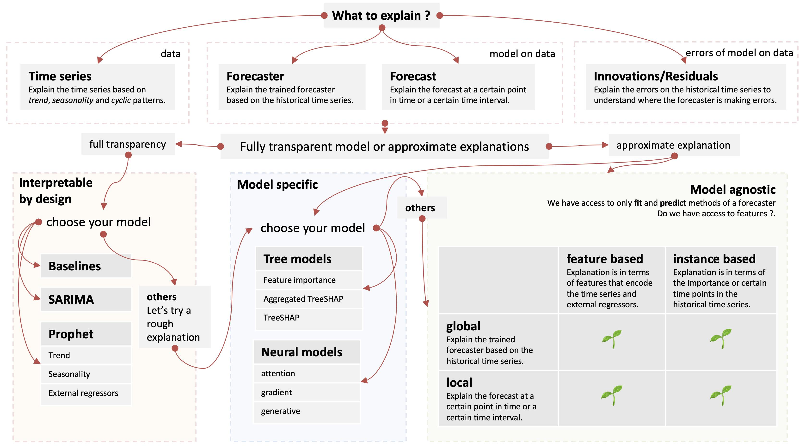

Explainability for time series forecasting
#
Explainability is the degree to which a human can understand the cause of a decision (or prediction) made by a prediction model .
Types of time series
#
| type |
time series only |
time series + external regressors |
| univariate |
1 ✔ |
2 ✔ |
| multiple univariate |
3 ✔ |
4 ✔ |
| multiple hierarchical univariate |
5 (phase 2) |
6 (phase 2) |
| multivariate |
7 ✘ |
8 ✘ |
Domain of explanations
#
| what |
explain |
| data |
Explain the time series based on trend, seasonality and cyclic patterns. |
| forecaster |
Explains the trained forecaster based on the historical time series. |
| forecast |
Explains the forecast at a certain point in time or a certain time interval. |
| residual |
Explains the residual on the historical time series to understand where the forecaster is making errors. |
Scope of explanations
#
| scope |
description |
| global explanation |
Explains the forecaster trained on the historical time series. |
| local explanation |
Explains the forecast made by a forecaster at a certain point in time. |
| group explanation |
Explains the overall forecast made by a forecaster at a certain time interval. The individual local explanations can be used on each instance and then listed or aggregated for the entire interval. |
Type of explanations
#
| type |
description |
| features based |
Explanation is in terms of features that encode the time series (lag features, date encodings etc.) and external regressors. |
| instance based |
Explanation is in terms of the importance or certain time points in the historical time series. |
Examples from supervised learning
#
| ⚡️ |
features |
instance |
| global |
feature importance plots |
|
| SHAP values |
|
|
| (what-if) Partial dependence plots |
|
|
| local |
LIME |
prototypes and criticisms |
| SHAP |
influence functions |
|
| counterfactual explanation |
|
|
| (what-if) counterfactual queries |
|
|
Model-agnostic explaninablity
#
- We have access to only
fit and predict methods of a forecaster.
- We have access to training data ?
- We have access to features ?
Challenges
#
- Non-iid nature of data.
- Robustness. If the the foreecast does not change drastically for the next time point the explanation should not change.
- Explain prediction intervals and quantile forecasts.
- Scalability.
Interpretable models
#
Some time series forecasting models are inherently interprtable and we aim to wrap up the model specific interpretation whereever available.
- Statistical models
- Exponential Smoothing
- Holt-Winter
- S/ARIMA/X
- Croston’s models
- Theta
- Prohet
- machine learning models
- Tree based algorithms like XGBoost, CatBoost
- Gradient Boosted Machines like LightGBM
- Gaussian Process Regression
- deep learning models
- Recurrent Neural Networks (RNN)
- Temporal Convolutional Neural Networks (TCNN)
Taxonomy
#

Inspired from here
References
#